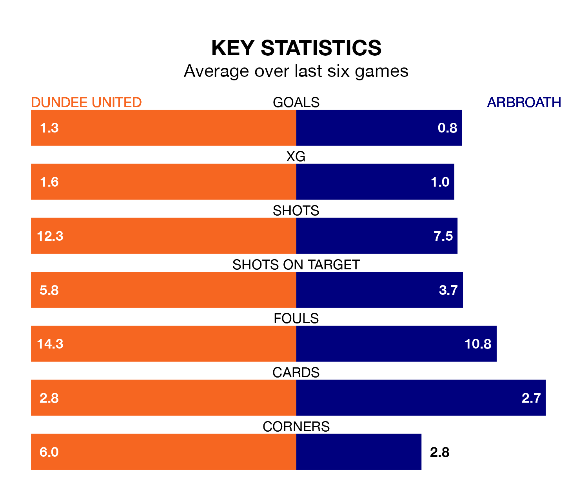

Dundee United host Arbroath in Saturday's match at Tannadice Park looking to bounce back from defeat last time out in the Championship.
The Terrors, who sit top of the league after 27 games, fell to a 0-1 away defeat to Greenock Morton on Tuesday.
They face an Arbroath side who picked up a win in their last match, a 3-2 victory against Raith Rovers, and who sit 10th in the table.
With 51 goals in 27 games so far this season, Dundee are the league's joint-highest scorers with 1.9 goals per game. And they are conceding fewer than average, letting in 17 goals at a rate of 0.6 per game.
Arbroath, meanwhile, are below average scorers, with 1.1 goals per game, compared to a league average of 1.4. They have conceded 2.1 goals per game.
With Jack Walton between the sticks, United can rely on one of the league's safest pair of hands. He has kept 14 clean sheets in his 27 appearances this season, and no 'keeper has prevented the opposition scoring more often in the Championship.
In the visitors' net, Derek Gaston has three clean sheets in 20 games. He has conceded a goal every 46 minutes, three times as often as the 152 minutes between goals for Walton.
In the last 10 years, Dundee and Arbroath have played each other on 10 occasions. Dundee won six of them, Arbroath one, and they drew three times.
On average, the Terrors scored 1.9 goals and Arbroath 0.4 in those matches.
Their last meeting was on January 2, when Dundee won 3-0 away.
The Terrors are in mixed form in the Championship, with three wins and a draw from their last six games.
With a win and two draws over that period, Arbroath's form is worse – they have taken five points from 18, compared to the home team's 10.
Saturday's match will be refereed by Alan James Muir, who has taken charge of five Championship games so far this season, issuing one red card and booking 24 players. He has awarded two penalties.
The last Dundee game Muir refereed was a 1-0 away win against Inverness CT on January 12. He is yet to oversee a match featuring Arbroath this season.
Updated: 09:34 (UTC), 08/03/24